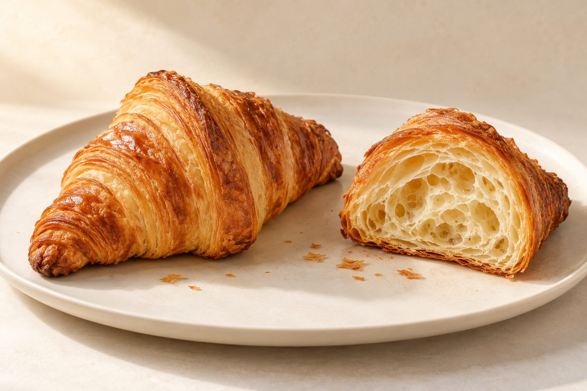

Butter croissant
- Outside
- Deep-bronze, crackly-looking layers curving to two tapered ends.
- Inside
- Open, honeycomb-like pockets framed by thin, crisp layers.
- Flavour inspiration
- The classic: rich and buttery, with a toasty edge from the darker folds.
- Nice for
- A slow morning, or a simple treat to share.